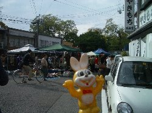
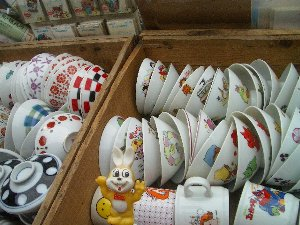
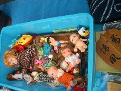
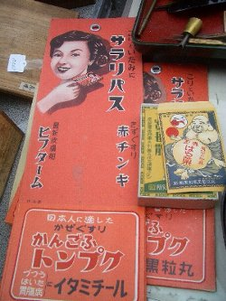
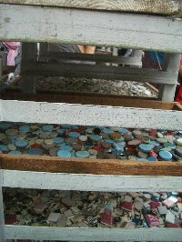
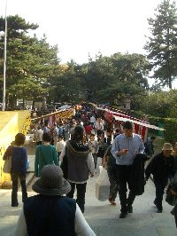
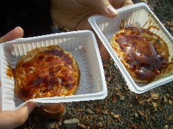
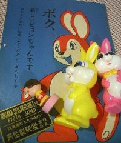

|
collection
|
-ピョンチャンリョコウキ2-京都北野天満宮・天神さん編（2008）-北野天満宮で毎月25日に行われる天神さんへ行ってきました。 
 天神さんを見に北野天満宮へやって来ました。 さっそく覗いてみます。  お茶碗です。レトロなものがいっぱい。 これはエプロン。お店の方もこんなエプロンしていました。   お人形さんいっぱいと昔の薬グッズ。 乾物。手前はきんかんです。おいしそう！  いろいろなタイル。かわいい。 お目当てのキャラクターグッズ屋さん。 何軒かこういうグッズを取り揃えているお店がありますが、  この先は食べ物関係のお店が多く並んでいます。  いつも来るたび食べているお気に入り「○○焼き」 北野天満宮本殿の前。  今日のお買い物 
Copyright(c) 2008 なないろまーぶる All rights reserved |